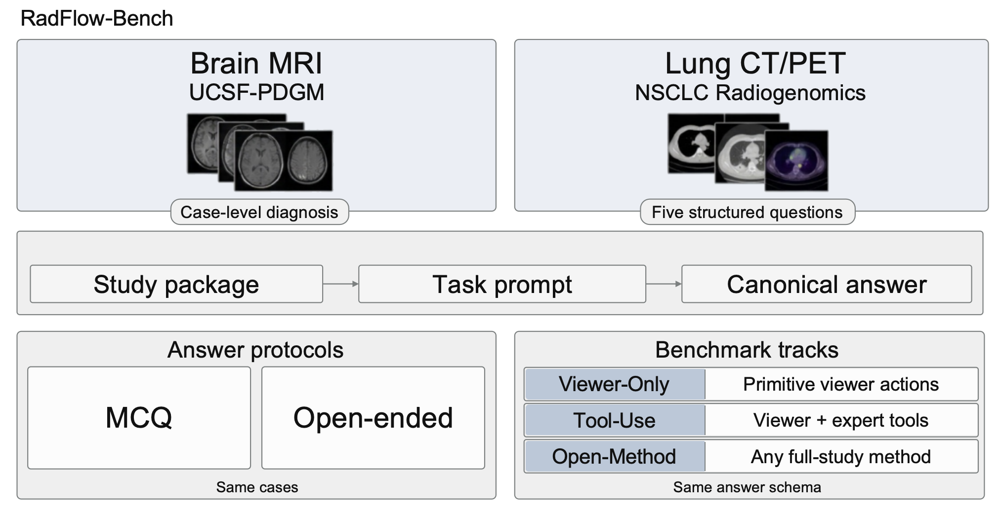

Project Website
MedOpenClaw
Auditable Medical Imaging Agents Reasoning over Uncurated Full Studies
This page is intentionally lightweight and video-first. It focuses on qualitative case demonstrations, two static example panels, and the main figure from the paper.
Overview
A clean GitHub Pages site for qualitative evidence
MedOpenClaw presents study-level medical imaging agent behavior over full, uncurated studies. The layout is optimized for direct qualitative inspection: viewers can jump straight into the demo videos, then inspect the main figure and two static examples.
Main figure
From pre-selected 2D inputs to auditable full-study workflows

Video demos
Primary showcase
The page is built around native HTML5 video players, so deployment stays simple and
GitHub Pages-friendly. Upload your clips into static/videos/ and the page
will automatically surface any files that match the expected names.
Optional combined reel
Single-file overview video
Optional combined reel not found yet.
Add
static/videos/demo1234.mp4 if you want one large summary video at the top.
Demo 01
Brain Tumor Localization and Differentiation
Demo slot ready.
Add
static/videos/demo1.mp4 or demo1.mov.
Study-level inspection for tumor localization together with differentiation across relevant imaging evidence.
Demo 02
Longitudinal Analysis of Tumor Size
Demo slot ready.
Add
static/videos/demo2.mp4 or demo2.mov.
Before-versus-after comparison for longitudinal change, centered on tumor size and study-to-study evolution.
Demo 03
Adjust to the Most Informative Tumor View
Demo slot ready.
Add
static/videos/demo3.mp4 or demo3.mov.
A focused viewer-control example where the agent adjusts the view to the slice or perspective that makes the tumor most evident.
Demo 04
Failure Case: Segmentation Failure
Demo slot ready.
Add
static/videos/demo4.mp4 or demo4.mov.
An explicit failure case that makes segmentation breakdowns visible instead of hiding them behind a final prediction.
Selected figures
Two static examples plus the benchmark overview
These panels complement the videos without overloading the page. They are included as reference material for readers who want a quick static snapshot of the workflow.
Static example A
Representative auditable traces

Static example B
Benchmark and protocol summary

Paper
Open the manuscript
The website is intentionally concise. For the full framing, implementation details, and evaluation protocol, read the arXiv manuscript.
Citation
BibTeX
The citation block is included in the same publication-page style used by many project websites, so readers can copy it directly without opening another page.
BibTeX
Cite MedOpenClaw
@misc{shen2026medopenclawauditablemedicalimaging,
title={MedOpenClaw: Auditable Medical Imaging Agents Reasoning over Uncurated Full Studies},
author={Weixiang Shen and Yanzhu Hu and Che Liu and Junde Wu and Jiayuan Zhu and Chengzhi Shen and Min Xu and Yueming Jin and Benedikt Wiestler and Daniel Rueckert and Jiazhen Pan},
year={2026},
eprint={2603.24649},
archivePrefix={arXiv},
primaryClass={cs.CV},
url={https://arxiv.org/abs/2603.24649},
}